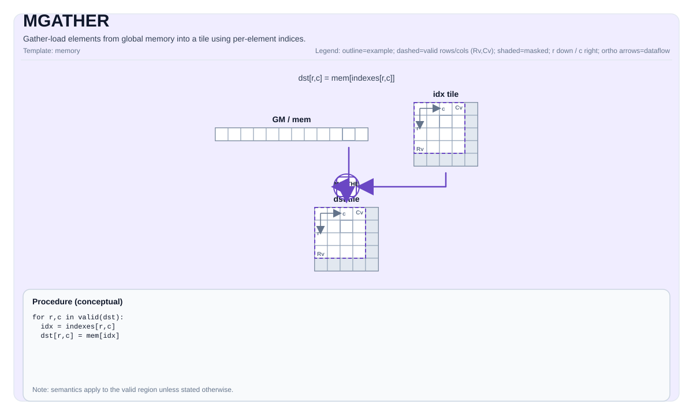

MGATHER¶
Tile Operation Diagram¶

Introduction¶
Gather data from a GlobalTensor (GM) into a Tile using per-row or per-element indices. This custom instruction performs indexed memory access from global memory, supporting both row-level block transfers (e.g., embedding table lookups) and element-level indexed transfers (e.g., sparse access patterns).
MGATHER is implemented as a SIMT kernel using cce::async_invoke with 1024 threads (32 warps × 32 lanes).
Math Interpretation¶
Row-Indexed Gather¶
For a table with RowWidth-sized rows, given a 1D index tile idx of length NumRows:
Each index selects an entire row from the source table.
Element-Indexed Gather¶
For per-element indexing where each destination element has its own index:
Indices are interpreted as linear element offsets into the source.
Assembly Syntax¶
PTO-AS form: see docs/assembly/PTO-AS.md.
Row-indexed gather:
%dst = mgather.row %table, %idx : (!pto.memref<...>, !pto.tile<Nx1xi32>) -> !pto.tile<NxMxT>
Element-indexed gather:
%dst = mgather.elem %table, %idx : (!pto.memref<...>, !pto.tile<NxMxi32>) -> !pto.tile<NxMxT>
C++ Intrinsic¶
Declared in include/pto/npu/a5/MGather.hpp:
template <GatherOOB Mode = GatherOOB::Undefined, typename TileDst, typename GlobalTable, typename TileIdx>
PTO_INTERNAL void MGATHER(TileDst& dst, GlobalTable& table, TileIdx& indices);
Parameters:
- dst: Destination tile in UB with shape [NumRows, NumCols]
- table: Source GlobalTensor in GM representing the lookup table
- indices: Index tile containing row indices (shape [NumRows, 1]) or element indices (shape [NumRows, NumCols])
- Mode: Out-of-bounds handling mode (template parameter)
Out-of-Bounds Handling¶
The GatherOOB enum controls behavior when indices exceed table bounds:
enum class GatherOOB : uint8_t {
Undefined = 0, // No bounds check
Clamp = 1, // Clamp index to [0, tableSize-1]
Wrap = 2, // Index modulo tableSize (idx % tableSize)
Zero = 3 // Return zero for out-of-bounds accesses
};
Constraints¶
Data Types (A5)¶
TileDst::DTypemust be one of:int8_t,uint8_t,int16_t,uint16_t,int32_t,uint32_t,half,bfloat16_t,float,float8_e4m3_t,float8_e5m2_t.
Index Types¶
TileIdx::DTypemust beint32_toruint32_t.
Tile Constraints¶
- Destination tile location must be
TileType::Vec(UB). - Index tile location must be
TileType::Vec(UB). TileDst::Rows == TileIdx::Rows(matching row count).TileIdx::Cols == 1for row-indexed gather, orTileIdx::Cols == TileDst::Colsfor element-indexed gather.- Destination and table must have the same data type.
Shape Constraints¶
- For row-indexed mode: Table shape dimension 3 specifies number of rows, dimension 4 specifies row width.
- For element-indexed mode: Table is treated as a linear array of size
Shape[3] * Shape[4].
Examples¶
Row-Indexed Gather (Embedding Lookup)¶
#include <pto/npu/a5/custom/MGather.hpp>
using namespace pto;
template <typename T, int NumRows, int RowWidth, int TableRows>
void example_embedding_lookup(__gm__ T* table, __gm__ int32_t* indices) {
using IdxTile = Tile<TileType::Vec, int32_t, NumRows, 1>;
using DstTile = Tile<TileType::Vec, T, NumRows, RowWidth>;
using TableShape = Shape<1, 1, 1, TableRows, RowWidth>;
using TableStride = Stride<1, 1, 1, RowWidth, 1>;
using TableTensor = GlobalTensor<T, TableShape, TableStride, Layout::ND>;
TableTensor tableGM(table);
IdxTile idx;
DstTile dst;
TASSIGN(idx, 0x0);
TASSIGN(dst, 0x1000);
// Load indices from global memory
GlobalTensor<int32_t, Shape<1,1,1,1,NumRows>, Stride<1,1,1,1,1>> idxGlobal(indices);
TLOAD(idx, idxGlobal);
// Perform gather with wrap mode for hash tables
MGATHER<GatherOOB::Wrap>(dst, tableGM, idx);
}
Element-Indexed Gather (Sparse Access)¶
#include <pto/npu/a5/custom/MGather.hpp>
using namespace pto;
void example_sparse_gather(__gm__ float* data, __gm__ int32_t* sparseIndices) {
using IdxTile = Tile<TileType::Vec, int32_t, 16, 16>;
using DstTile = Tile<TileType::Vec, float, 16, 16>;
using DataShape = Shape<1, 1, 1, 1024, 64>;
using DataStride = Stride<1, 1, 1, 64, 1>;
using DataTensor = GlobalTensor<float, DataShape, DataStride, Layout::ND>;
DataTensor dataGM(data);
IdxTile idx;
DstTile dst;
TASSIGN(idx, 0x0);
TASSIGN(dst, 0x2000);
// Gather with zero-fill for OOB indices
MGATHER<GatherOOB::Zero>(dst, dataGM, idx);
}
Manual Memory Assignment¶
#include <pto/npu/a5/custom/MGather.hpp>
using namespace pto;
void example_manual() {
using IdxTile = Tile<TileType::Vec, int32_t, 8, 1>;
using DstTile = Tile<TileType::Vec, half, 8, 64>;
using TableShape = Shape<1, 1, 1, 65536, 64>;
using TableStride = Stride<1, 1, 1, 64, 1>;
using TableTensor = GlobalTensor<half, TableShape, TableStride, Layout::ND>;
__gm__ half* tablePtr = /* ... */;
TableTensor tableGM(tablePtr);
IdxTile idx;
DstTile dst;
TASSIGN(idx, 0x0);
TASSIGN(dst, 0x1000);
MGATHER<GatherOOB::Clamp>(dst, tableGM, idx);
}
Performance Considerations¶
-
Row-indexed gather is more efficient than element-indexed when accessing structured data (embeddings, weight matrices) because it enables coalesced memory access within each row.
-
Index locality: When possible, sort indices to improve cache hit rates.
-
SIMT execution: The kernel uses 1024 threads (32 warps × 32 lanes) for parallel gather operations.
-
Out-of-bounds mode:
GatherOOB::Undefinedis fastest but requires indices to be valid. UseClamp,Wrap, orZerowhen indices may exceed bounds.